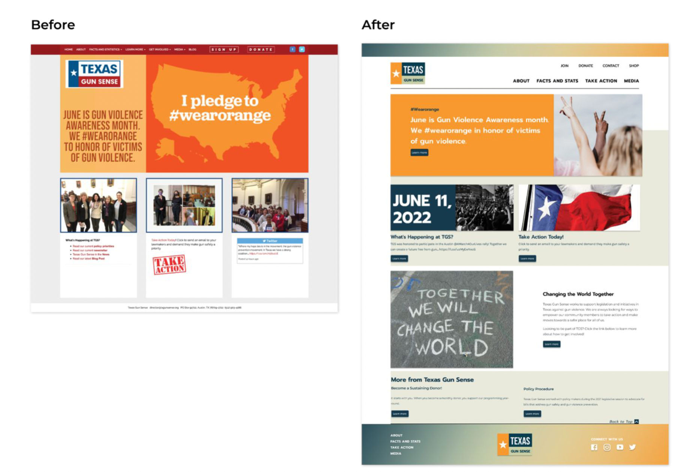

Works
type something here ttktktktk
Projects
Texas Gun Sense

Web Redesign, UI/UX Design, Visual Design, Research, User Testing.
The existing Texas Gun Law platform is cognitively complex, distracting, and overbearing. By shifting away the focus away from the visual UI and I wanted to build awareness towards educating the Texas community on gun law and safety.
No Rest for Bridget

Web Redesign, UI/UX Research/Design.
Without a user-friendly website, users are less likely to indulge in the process of online shopping. This process can often be the reason to why business’ online MRR (Monthly Recurring Revenue) is lower in comparison to in-store MRR. Also, some users tend to feel time-wasted when they have to search for hours to find a product that suits their needs. Our mission was to create a website that encourages for clienteles’ to have an overall enjoyable online-shopping experience by redesigning and website and building a stronger online presence "
Roomies for Uni

Building mobile application [from scratch]
“Helpful idea for college students who want to live off-campus”
“Filters out individuals I would not have wanted to roomed with”
“Personalized features and feels like a fun navigation around the vicinity”